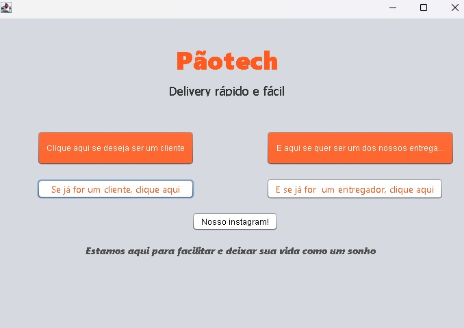
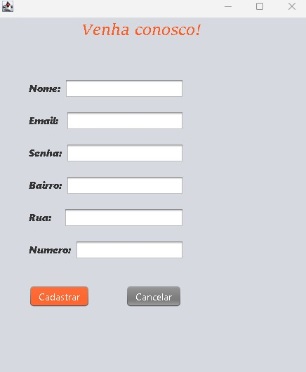
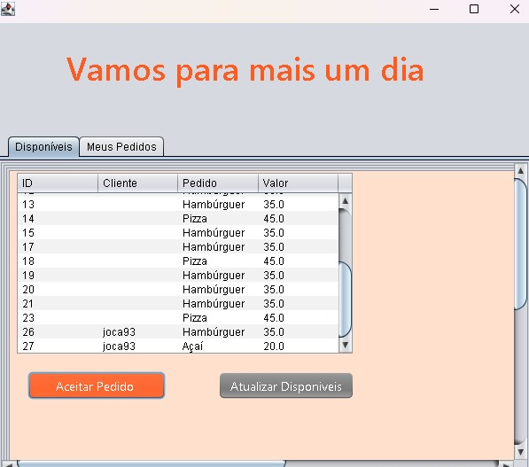
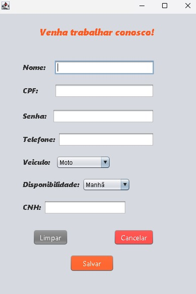

OLÁ, SEJA BEM-VINDO AO MEU PORTFÓLIO
Conheça minha trajetória, meus conhecimentos, projetos e meu interesse pelo mundo da tecnologia.
Conhecer meus projetosOlá! Meu nome é Fábio Becker Nascimento e sou estudante do curso Técnico em Informática integrado ao Ensino Médio pelo Senac.
Tenho interesse pela área de Tecnologia da Informação, especialmente desenvolvimento de sistemas, infraestrutura, hardware e cibersegurança.
Durante minha formação, venho adquirindo conhecimentos em programação, banco de dados, redes de computadores, montagem e configuração de computadores e desenvolvimento web.
Sou uma pessoa curiosa, dedicada ao aprendizado e gosto de conhecer novas tecnologias e buscar soluções para problemas. Meu objetivo é iniciar minha carreira na área de TI e continuar evoluindo profissionalmente.
HTML, CSS, JavaScript, Java e Python.
Montagem e configuração de computadores, Windows 11 e Microsoft Office 365.
Switches, roteadores, cabeamento estruturado e redes wireless.
SQL, MySQL, fundamentos de cibersegurança e Inteligência Artificial.
Senac (finalizado em 2026)
Ensino Médio integrado ao Técnico em Informática.
Colégio Davina Gasparini (finalizado em 2023)
Ensino Fundamental.
Inglês: intermediário | Espanhol: iniciante
Conhecimentos adquiridos durante o Ensino Médio e sua relação com a programação.
Contribui para o desenvolvimento do pensamento crítico, da interpretação e da compreensão de problemas sociais, habilidades importantes para criar soluções tecnológicas.
Desenvolve a capacidade de observar, investigar e analisar situações, utilizando o raciocínio científico para encontrar soluções para diferentes problemas.
Está diretamente relacionada à programação, pois trabalha com lógica, cálculos, padrões e resolução de problemas, utilizados na criação de algoritmos.
Ajuda na comunicação, interpretação de textos e organização de ideias, competências importantes para compreender requisitos e desenvolver sistemas.
Conhecimentos adquiridos durante o Ensino Médio.
Algumas das principais tecnologias que estão transformando o mundo.
Área responsável pela proteção de computadores, sistemas, redes e dados contra ataques digitais. É essencial para garantir a segurança e a privacidade das informações.
Tecnologia que permite registrar informações em uma rede distribuída, de maneira organizada e difícil de alterar. É utilizada em criptomoedas e outras aplicações digitais.
Utiliza máquinas, robôs e sistemas para realizar tarefas automaticamente, aumentando a eficiência e reduzindo a necessidade de atividades manuais repetitivas.
Permite processar dados próximo de onde são gerados, reduzindo o tempo de resposta e a necessidade de enviar todas as informações para servidores distantes.

Sistema de gerenciamento de padaria e entregas, desenvolvido para facilitar o cadastro de clientes, entregadores e o gerenciamento de pedidos.
Tecnologias: Java, Java Swing, SQL e H2.



Sistema de suporte técnico
Sistema desenvolvido para facilitar o gerenciamento de chamados de suporte técnico. Permite registrar, visualizar, atualizar e excluir solicitações, além de definir prioridades para os atendimentos.
Tecnologias: Python, Streamlit, SQLite e MySQL.
Tipo: Projeto acadêmico.
Aqui serão apresentados os projetos desenvolvidos durante o curso.
Tem alguma dúvida ou gostaria de conversar? Envie uma mensagem!